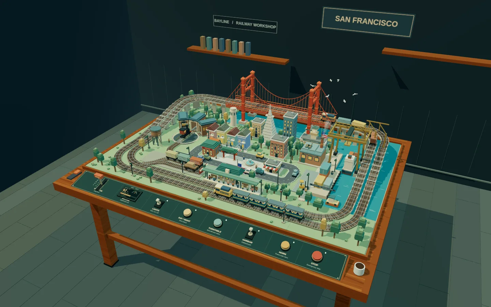
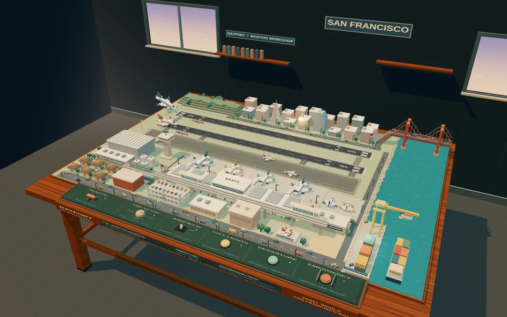

WORLD / 01Ready to exploreMODEL RAILWAYBAYLINE
San Francisco · Model Railway Workshop
Follow two trains around a miniature Bay Area. Work the throttle, turn the roundhouse, and bring the harbor to life.
A railway winds through the city. A plane comes in over the Bay. Step closer, take the controls, and lose yourself in the little details.
Free to explore · No install · No sign-up

Two handcrafted scenes. One familiar feeling of a world on your table.

WORLD / 01Ready to exploreMODEL RAILWAYSan Francisco · Model Railway Workshop
Follow two trains around a miniature Bay Area. Work the throttle, turn the roundhouse, and bring the harbor to life.
San Francisco Bay · Miniature Airport
Watch aircraft cross a tiny Bay Area sky. Explore twin runways, terminal activity, and a working tabletop control panel.
Inspired by the quiet fascination of a model railway, Simulated World turns busy infrastructure into small, living dioramas. No score to chase. Just a little room for curiosity.
Drag a lever. Flip a switch. Take the controls, or step back and watch everything move.
Follow the day-night cycle as windows glow and the tiny landscape changes character.
Procedural geometry, miniature scenery, and wooden-table settings. No downloaded models or visual assets inside the worlds.
Start exploring in seconds. The full controls live inside each world.
Open a world, drag empty space to orbit, and scroll to zoom. The controls along the front of the model table are interactive. Open Controls inside each world for its full guide.
No download or account is required. The worlds run in your browser and load Three.js from a CDN, so an internet connection and WebGL support are needed. Start with Chrome on a desktop for the roomiest controls.
These are artistic, Bay Area-inspired dioramas, not exact maps or operational training tools. Landmarks, routes, distances, and airport layouts are compressed or rearranged to fit the tabletop.
The public simulator code is available under the MIT license. You can inspect, modify, and reuse it while keeping the license notice. The source repository includes the complete standalone HTML files.